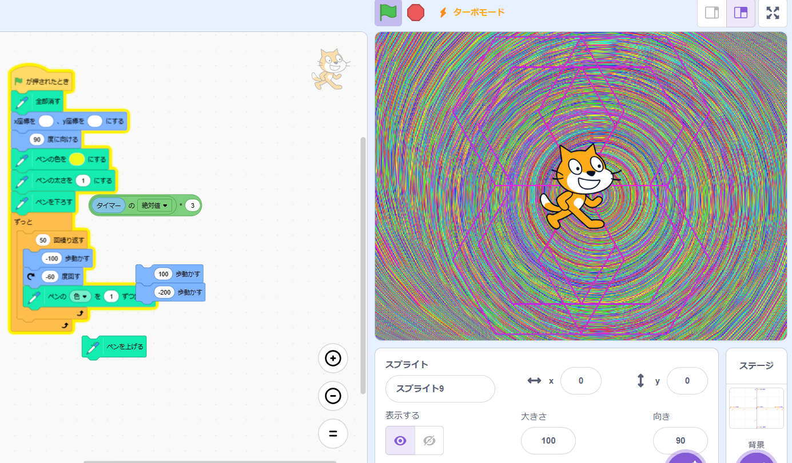
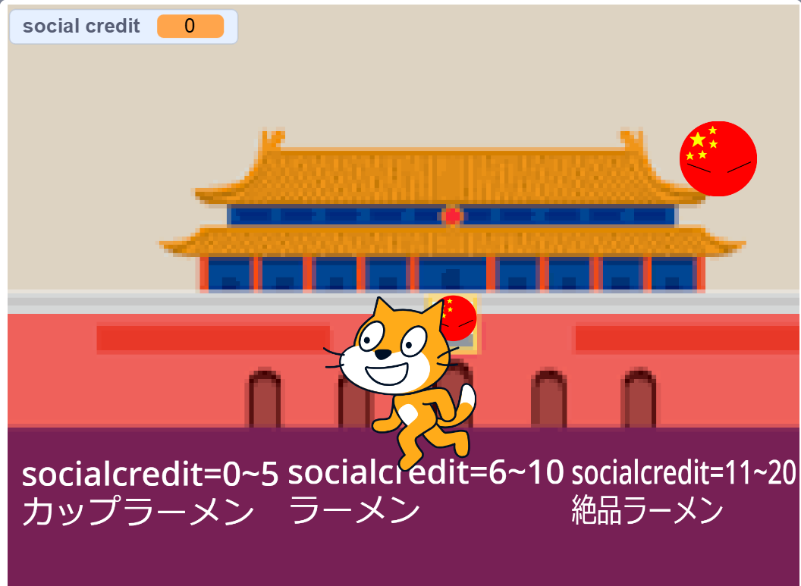

1週目のレポート ： 公大高専１年実習I-1
2b班24番 近松門左衛門と思いきや平賀源内と見せかけて山中鹿之助だと思ったら織田信長だと思ったらチンギス・ハン
第1週目
1-1 サイエンスアート

1.内容
スクラッチを使って線を書くプログラムを作った。ペン機能で線を描ける状態をスプライトに付与し、角度や移動で線を描くことで、ズレのない図形を描くことができるというプログラムである。
2.感想
やったことのある簡単なコードだったし、そこまで難しくはなかったけど、このような基本動作からプログラミングは始まるんだなと思った。
1-2 ゲーム

1.内容
中国のボールをキャッチすることでポイントを獲得し、ポイントによって違うラーメンをもらえるゲームである。
2.感想
簡単だったが、こんなブロックプログラミング言語でも応用は効くので、プログラミングという概念はすごいと思った。
1-3 ホームページ作成
私のホームページ
1.内容
htmlファイルを編集して、自分のページを作った。
2.感想
やはりhtmlファイルはあまりできないが、とても楽しかった。
各ページへのリンク
1週目のレポート
2週目のレポート
3週目のレポート
私のホームページ